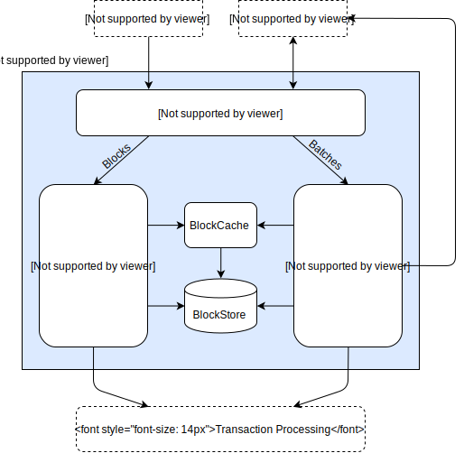

Journal¶
The journal is the group of validator subcomponents that work together to handle batches and proposed blocks. These components are responsible for completing published blocks, publishing batches into blocks to extend the chain, and validating proposed blocks to determine if they should be considered for the new chain head.
Blocks and batches arrive via interconnect, either through the gossip protocol or from client requests. The processing of these blocks and batches is handled in multiple pipelines.
{kind=link}
The Completer initially receives the blocks and batches. It guarantees that all dependencies for the blocks and batches have been satisfied.
Completed batches go to the BlockPublisher for batch validation and inclusion in a block.
Completed blocks go to the ChainController for block validation and fork resolution.
The BlockCache and BlockStore provide storage for the batches and blocks being processed.
Batch and block processing is designed to be asynchronous, which allows the ChainController to process incoming blocks in parallel, as well as allowing the BlockPublisher to proceed with claiming blocks even when the incoming block rate is high.
This approach is flexible enough to work with different consensus algorithms. Sawtooth includes a consensus interface that communicates with the components in the journal.
The Completer¶
When a proposed block is broadcasted, it contains only the minimum required information, such as batch IDs but not the batches themselves. The Completer is responsible for making sure that blocks and batches are complete before delivering them to the BlockPublisher or ChainController.
The Completer checks for dependencies, ensures that the previous block exists, and makes sure that the batches exist in the BlockStore or BlockCache.
A batch is considered complete when all of its dependent transactions exist in the current chain or have been delivered to the BlockPublisher. Once a batch is formally complete, it is delivered to the ChainController.
A block is considered complete when all of its predecessors have been delivered to the ChainController and the
batchesfield contains all the batches specified (as batch IDs) in the block header. Also, thebatchesfield must be in the same order as the list of batch IDs. Once a block is formally complete, it is delivered to the ChainController for validation.
All blocks and batches have a timeout for being completed. The Completer sends an initial request for any missing dependencies or predecessors. If a response is not received in the specified time, the block or batch is dropped.
For example, consider the case of a chain A->B->C. If block C arrives but B is not in the BlockCache, the Completer will request block B. If the request for B times out, block C is dropped.
Later, if block D arrives with predecessor C (for the chain A->B->C->D), the Completer requests block C from the network. After C arrives, the Completer requests B again. If B arrives this time, the new chain is delivered to the ChainController, which checks it for validity and considers making it the new block head.
The BlockPublisher¶
The BlockPublisher is responsible for creating candidate blocks to extend the current chain. The BlockPublisher does all of the housekeeping work for creating a block, but takes direction from the consensus algorithm for when to create a block and when to publish a block.
The BlockPublisher responds to the following events:
Start block
Receive batch
Summarize block (stop and make the block available)
Finalize block (publish the block)
The ChainController¶
The ChainController is responsible for maintaining the blockchain for the validator. This responsibility involves validating proposed blocks, evaluating valid blocks to determine if they should be considered for the new chain head, and generating new blocks to extend the chain.
The ChainController determines which chain the validator is currently on and coordinates any change-of-chain activities that need to happen.
The BlockStore¶
The BlockStore is a persistent on-disk store of all blocks in the current chain - that is, the list of blocks from the current chain head back to the genesis block. (Blocks from forks are not included in the BlockStore.) When the validator is started, the contents of the BlockStore is trusted to be the current “state of the blockchain”. All blocks stored here are formally complete.
In addition, the BlockStore maintains internal mappings of transaction-to-block and batch-to-block. These mappings can be rebuilt if they are missing or corrupt (usually during startup, not during the course of normal operation). These mappings are stored in a format that is cached to disk, so they are not held in memory at all times. Note that as the blockchain grows, this set of mappings will become quite large.
The BlockStore provides an atomic method for updating the current chain (when the fork is changed). In order for the BlockStore to switch forks, it is provided with a list of blocks in the new chain to commit, and a list of blocks in the old chain to de-commit. These two lists specify the blocks in each fork back to the common root.
Blocks in the BlockStore can be accessed by block ID. Blocks can also be accessed via batch ID, transaction ID, or block number.
Note
The BlockStore is expected to be coherent at all times. An error in the BlockStore is considered a non-recoverable error for the validator. Such critical errors would include missing blocks, bad indexes, missing chain reference, incomplete blocks or invalid blocks.
The BlockCache¶
The BlockCache is an in-memory construct that is rebuilt when the system is started. It holds the working set of blocks for the validator.
The BlockCache tracks the processing state of each block as valid, invalid, or unknown.
Valid blocks have been proven to be valid by the ChainController. All blocks in the BlockStore are considered valid.
Invalid blocks have failed validation or have an invalid block as a predecessor.
Unknown blocks have not yet completed validation. Usually, these blocks have just arrived from the Completer.
If a block is not present in the BlockCache, the validator looks in the BlockStore for the block. If it is not found or the lookup fails, the block is marked as unknown. If the block is found in the BlockStore, it is loaded into the BlockCache and marked as valid.
The BlockCache keeps blocks that are currently relevant, tracked by the last time the block was accessed. Periodically, blocks that have not been accessed recently are purged from the BlockCache, but only if none of the other blocks in the BlockCache reference those blocks as predecessors.
The Consensus Interface¶
In the spirit of configurability, Sawtooth supports dynamic consensus. The initial consensus algorithm for the blockchain is set in the genesis block, but can be changed during a blockchain’s lifetime with the Settings transaction processor.
The consensus interface is responsible for determining who can publish a block, whether a published block is valid according to the consensus rules, and which block should become the chain head in the case of a fork.
As described earlier in this section, the validator handles the mechanics of creating blocks, committing blocks, and networking between peers and other nodes on the network.
The Genesis Process¶
The process of creating a genesis block is different from the standard block-creation process that is described in the previous Journal sections.
A genesis block (the root of a blockchain) is required to bootstrap a new Sawtooth network with on-chain settings such as the desired consensus algorithm, any deployment-specific configuration settings, and any application-specific transactions that are needed at genesis time.
The genesis block contains a list of batches that the validator will process when starting with an empty blockchain. This allows applications (also called transaction families) to include their own batches without needing to know the details of the genesis process.
The genesis process has the following general steps:
Create a genesis batch of initial blockchain transactions
Create a genesis block from the genesis batch
Start the transaction processors
Process the genesis block
Genesis Batch Creation¶
The sawadm genesis command takes a set of batches as input and combines them
to create the genesis batch, which is a single protobuf-encoded list of batches
contained in GenesisData.
message GenesisData {
repeated Batch batches = 1;
}
The batches in the genesis block will be executed in order, using the same
ordering as the list. Each batch is implicitly dependent on the previous one.
The sawadm genesis command checks dependencies when creating the list to
verify that if dependencies exist, the batches are in the correct order.
If an application needs to include a set of transactions in the genesis block,
it must provide a tool to produce the GenesisData list of batches in the
correct order. If necessary, this tool should also manage the batch and
transaction dependencies explicitly within the context of the application’s
genesis batch.
The following example uses the sawset proposal create command to create a
batch of transactions that configure PoET consensus. Next, the
sawadm genesis command combines that batch (plus any others that exist) into
a GenesisData list of batches for the genesis block.
$ sawset proposal create \
-k <signing-key-file> \
-o sawset.batch \
sawtooth.consensus.algorithm.name=PoET \
sawtooth.consensus.algorithm.version=0.1 \
sawtooth.poet.initial_wait_timer={value} \
sawtooth.poet.target_wait_time={value} \
sawtooth.poet.population_estimate_sample_size={value}
$ sawadm genesis sawset.batch
When sawadm genesis runs, it writes a genesis.batch file to the
validator’s data directory (for more information, see
sawadm in the CLI Command Reference).
Note
For a network using PoET consensus, additional batches must be included in the genesis batch. For more information, see Using Ubuntu for a Sawtooth Test Network in the Application Developer’s Guide.
Genesis Block Creation¶
Once the genesis batch exists, the validator uses the following process to produce a genesis block.
When a validator starts, it determines that it must produce a genesis block if the following conditions are true:
The
genesis.batchfile existsThere is no block specified as the chain head
If either of these conditions is not met, the validator halts operation.
The validator loads the batches from the
genesis.batchfile into the pending queue.The validator produces the genesis block using the standard block-creation process, with the following modifications:
The batch execution order is strictly in the order of the batches in the
GenesisDatalist. The Executor does not attempt to reorder batches or drop failed transactions. If any transaction ingenesis.batchfails, no genesis block is produced. The validator treats this failure as a fatal error.The validator determines block validity without considering consensus. At the start of the genesis block creation process, state (the Merkle-Radix tree) is empty, so the blockchain does not have a consensus algorithm yet. As a result, the genesis block has an empty consensus field.
The validator also writes the blockchain ID (that is, the signature of the genesis block) to the file
block-chain-idin the validator’s data directory. The blockchain ID is used to mark this validator’s genesis block as the correct one for the blockchain.
Genesis Block Processing¶
To complete the genesis process and commit the genesis block, all necessary transaction processors must be running.
If any transactions in the genesis block set or change settings, Sawtooth requires the Sawtooth Settings transaction processor or an equivalent implementation. For example, the genesis block specifies the consensus engine and related settings, so the Settings transaction processor is required to handle the transactions with these settings.
When the genesis block is committed, the consensus settings are stored in state. All subsequent blocks are processed with the configured consensus algorithm.